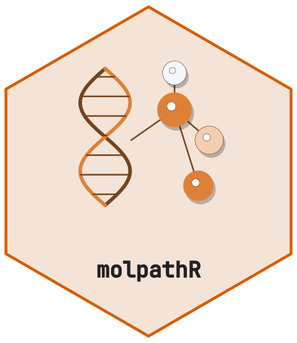
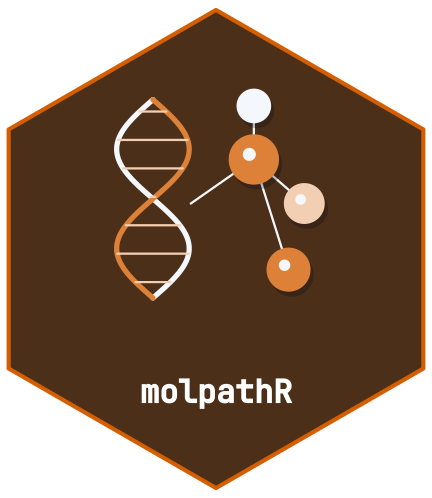

Scope
The six linked tables contain patients, samples, interpreted variants, reports, clinical measurements and survival outcomes. Readers retain source observations; the database does not infer patient identity, annotation, pathogenicity or assay coverage from absent fields. Raw FASTQ reads and BAM alignments remain inspectable reader results and cannot be added as interpreted variants.
A runnable import
This example uses only synthetic records and creates its own temporary files. Identifiers are supplied explicitly, including the link from each sample to a patient.
library(molpathR)
source_dir <- tempfile("molpath-example-")
dir.create(source_dir)
pathology <- file.path(source_dir, "pathology.csv")
clinical <- file.path(source_dir, "clinical.csv")
survival_file <- file.path(source_dir, "survival.csv")
writeLines(c(
"patient_id,name,sex,sample_id,sample_type,diagnosis,report_date",
"P1,Synthetic One,F,S1,FFPE,Example A,2025-01-01",
"P2,Synthetic Two,M,S2,FFPE,Example B,2025-01-02"
), pathology)
writeLines(c(
"patient_id;parameter;value;unit;date;source",
"P1;marker;17;U;2025-01-01;synthetic",
"P2;marker;23;U;2025-01-02;synthetic"
), clinical)
writeLines(c(
"patient_id,os_months,os_status,pfs_months,pfs_status",
"P1,12,0,8,0",
"P2,18,1,10,1"
), survival_file)
db <- mp_build_db(
mp_read_nexus_pathology(pathology),
mp_read_nexus_clinical(clinical),
mp_read_survival(survival_file)
)
#> ℹ Reading Nexus pathology export: pathology.csv
#> ✔ Parsed 2 record(s) from Nexus pathology export
#> ℹ Reading Nexus clinical export: clinical.csv
#> ✔ Parsed 2 clinical record(s)
#> ℹ Reading survival data: survival.csv
#> ✔ Parsed 2 patient record(s) with survival data
mp_validate_db(db)$valid
#>
#> ── Validating molpath database ──
#>
#> ✔ No referential integrity issues found.
#>
#> ── Data completeness
#> • Patients with samples: 100%
#> • Patients with variants: 0%
#> • Patients with reports: 0%
#> • Patients with clinical: 100%
#> • Patients with survival: 100%
#> [1] TRUE
mp_get_patient(db, "P1")$clinical
#> # A tibble: 1 × 6
#> patient_id parameter value date source unit
#> <chr> <chr> <chr> <date> <chr> <chr>
#> 1 P1 marker 17 2025-01-01 synthetic UCSV, semicolon-delimited and tab-delimited exports are detected by
their actual fields. Field aliases match whole column names, ignoring
case and surrounding header whitespace. patient_id_backup
is preserved as an extra source column; it does not replace
patient_id. Multiple recognized aliases for one field are
ambiguous and require reconciliation. Survival event values must be
exactly 0 (censored), 1 (event), or missing; fractional values are never
truncated. Observed times must be finite and nonnegative. Dates use ISO
YYYY-MM-DD values.
VCF calls and missing annotations
The reader preserves ID, INFO, FORMAT and each sample’s raw token
regardless of optional typed-reader installations. Original header lines
and declared sample names are in parsed$metadata. Database
integration expands observed non-reference GT alleles, while retaining
source genomic fields and genotype information. Each normalized row
keeps its original sample token in sample_fields,
interpreted by format; raw sample names cannot overwrite
gene annotations or model identifiers. It does not derive gene effects
or pathogenicity from coordinates.
vcf <- file.path(source_dir, "calls.vcf")
writeLines(c(
"##fileformat=VCFv4.2",
"#CHROM\tPOS\tID\tREF\tALT\tQUAL\tFILTER\tINFO\tFORMAT\tS1\tS2",
"1\t100\t.\tA\tG\t50\tPASS\tDP=50\tGT:DP\t0/1:20\t0/0:30"
), vcf)
parsed <- mp_read_vcf(vcf)
parsed$data
#> # A tibble: 1 × 11
#> chrom pos id ref alt qual filter info format S1 S2
#> <chr> <int> <chr> <chr> <chr> <dbl> <chr> <chr> <chr> <chr> <chr>
#> 1 1 100 . A G 50 PASS DP=50 GT:DP 0/1:20 0/0:30
linked <- mp_add_data(db, parsed)
linked$variants[, c("sample_id", "variant", "genotype", "gene", "classification")]
#> # A tibble: 1 × 5
#> sample_id variant genotype gene classification
#> <chr> <chr> <chr> <chr> <chr>
#> 1 S1 1:100:A>G 0/1 NA NA
mp_validate_db(linked)$valid
#>
#> ── Validating molpath database ──
#>
#> ✔ No referential integrity issues found.
#>
#> ── Data completeness
#> • Patients with samples: 100%
#> • Patients with variants: 50%
#> • Patients with reports: 0%
#> • Patients with clinical: 100%
#> • Patients with survival: 100%
#> [1] TRUEA site-only VCF or sample measurements without GT do not establish a
usable sample call. Inspect the parsed table, then supply an explicitly
normalized sample_id/variant table after
independent calling/annotation if that is the intended input. Reference
or uncalled genotypes are not evidence of a wild-type gene: the package
has no assay-coverage model.
Reports and raw sequencing
| Reader | Stored observations and boundary |
|---|---|
mp_read_xml_report() |
Explicit XML patient/sample IDs and variant text; namespace-aware generic template |
mp_read_pdf_report() |
Extracted text sections; no OCR or inferred patient/sample identity |
mp_read_fastq() |
Raw read IDs, sequences and qualities; n selects the
first records, not a random sample |
mp_read_bam() |
Explicit alignment fields, optionally restricted to one genomic region |
mp_read_auto() |
Recognized source schema; unrecognized or ambiguous tabular layouts raise an error |
The generic report templates are not vendor-certified. XML without a known link and PDF text can remain incomplete report evidence; inspect it before assigning an identity. The complete extracted PDF pages and text are retained in parser metadata; report summaries use the full text even when heuristic sections omit a heading. Image-only PDF reports require an external, verified transcription or OCR process. FASTQ/BAM database integration is refused because alignment and variant interpretation are separate tasks. The raw reader results remain usable.
For an extensionless uploaded file, pass its original filename using
mp_read_auto(path, source_name = "clinical.csv"). Dispatch
uses a disposable copy with that filename and records its basename, not
a deleted upload path.
Validation, merging and persistence
Constructed databases always contain the six typed tables. Missing
patient/sample links remain explicit and make
mp_validate_db(db)$valid false, even when the parent table
is empty. Malformed schemas, nonfinite measures, invalid event codes and
duplicate primary IDs raise an error. Merge identical records or
complementary missing attributes; resolve conflicting observed
attributes deliberately.
saved <- file.path(source_dir, "database.rds")
mp_save_db(linked, saved)
#>
#> ── Saving molpath database ──
#>
#> ── Validating molpath database ──
#>
#> ✔ No referential integrity issues found.
#>
#> ── Data completeness
#> • Patients with samples: 100%
#> • Patients with variants: 50%
#> • Patients with reports: 0%
#> • Patients with clinical: 100%
#> • Patients with survival: 100%
#> ✔ Database saved to /tmp/RtmpM59SsD/molpath-example-1ce03e43b067/database.rds (1.2 KB).
restored <- mp_load_db(saved)
#>
#> ── Loading molpath database ──
#>
#> ✔ Database loaded from /tmp/RtmpM59SsD/molpath-example-1ce03e43b067/database.rds.
#> ℹ Contents: 2 patients, 2 samples, 1 variant, 0 reports, 2 clinical records, 2 survival records.
identical(restored, linked)
#> [1] TRUE
unlink(source_dir, recursive = TRUE)Saving stages and verifies the complete RDS before replacement. A failed replacement restores the previous destination or reports the preserved recovery path. Use one writer per destination. Incomplete links are reported on save and remain inspectable after reload; they are not silently repaired.
Older zero-column empty tables and one-row metadata tibbles are
normalized on load. ISO date strings are normalized to
Date. Malformed nonempty tables or conflicting identities
require explicit repair; keep the original RDS and review the reported
field rather than fabricating missing clinical information.